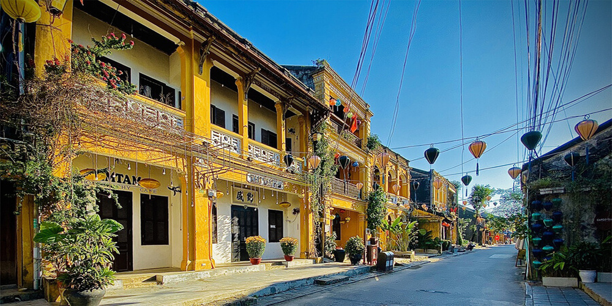
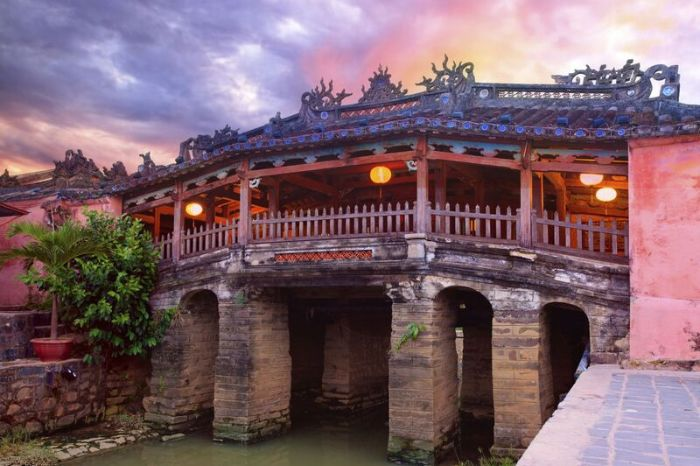
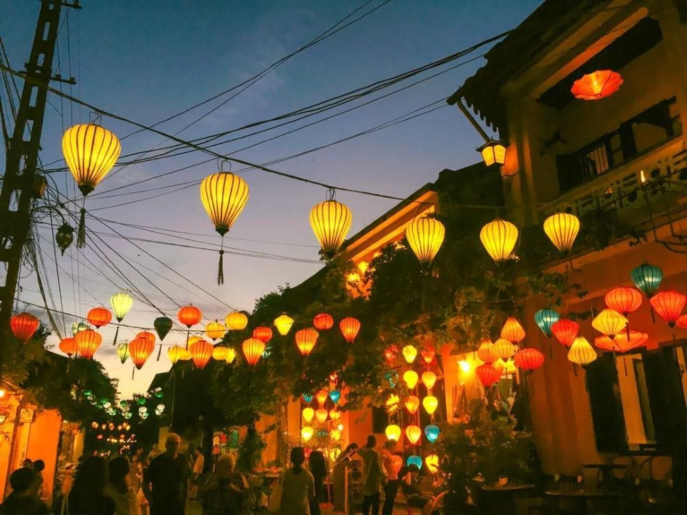
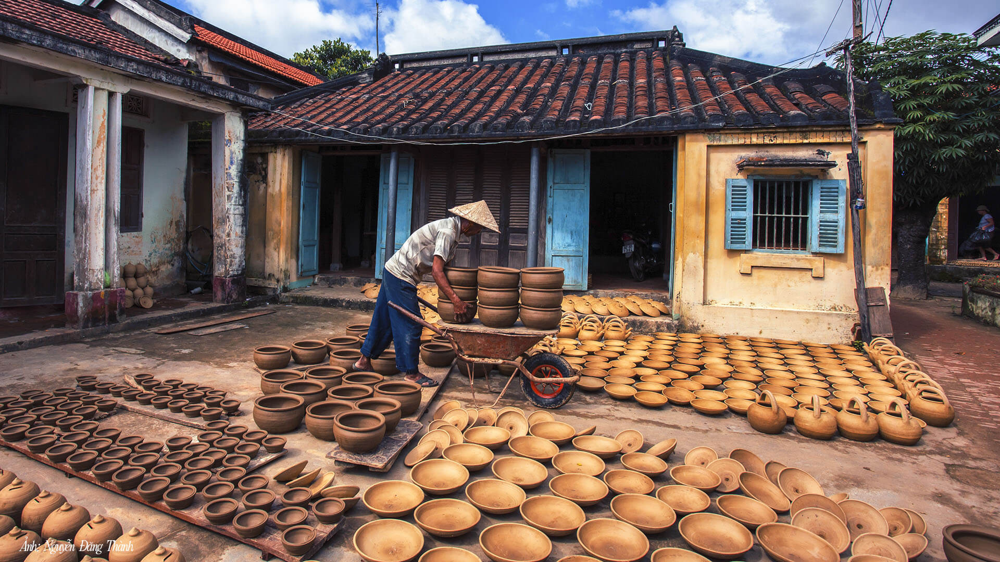
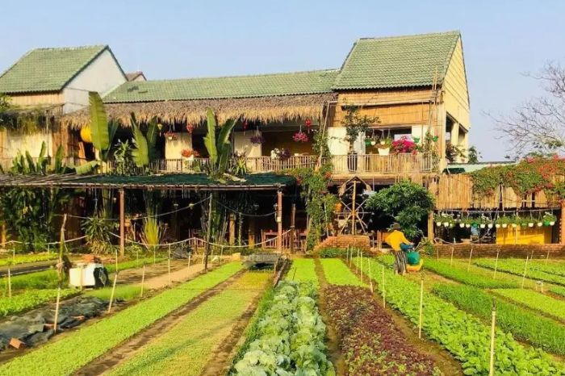
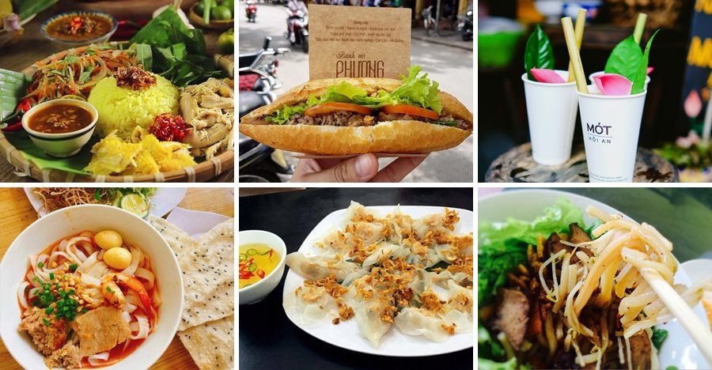
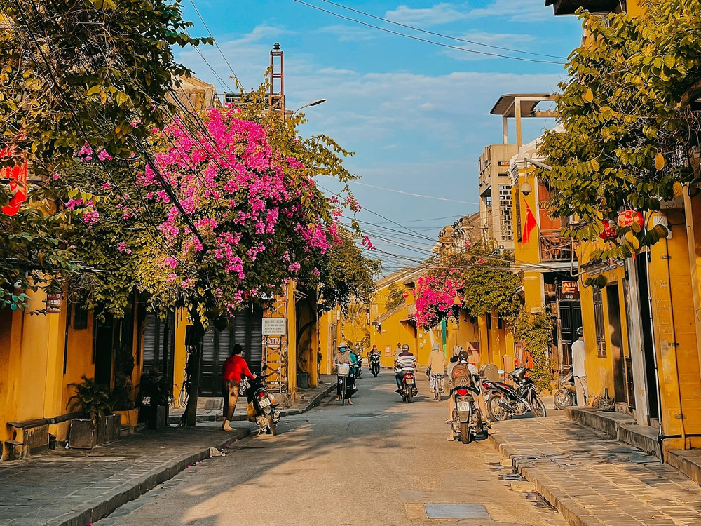

Giới Thiệu Tour
Hội An là một trong những điểm đến nổi tiếng nhất miền Trung, được yêu thích bởi vẻ đẹp cổ kính, những ngôi nhà vàng rêu phong, con phố nhỏ yên bình và ánh đèn lồng lung linh mỗi khi đêm xuống.
Tour Phố Cổ Hội An 2 ngày 1 đêm đưa du khách khám phá Chùa Cầu, phố đèn lồng, sông Hoài, làng gốm Thanh Hà, làng rau Trà Quế và thưởng thức nhiều món ăn đặc trưng như cao lầu, mì Quảng, bánh mì Hội An.
Điểm Nổi Bật

Phố Cổ Hội An
Dạo bước qua những con phố nhỏ, nhà cổ màu vàng và không gian yên bình.

Chùa Cầu
Biểu tượng nổi tiếng của Hội An, mang vẻ đẹp cổ kính và giá trị lịch sử.

Đèn Lồng Hội An
Check-in giữa không gian rực rỡ sắc màu khi phố cổ lên đèn.
Sông Hoài Thơ Mộng
Ngồi thuyền, thả hoa đăng và ngắm phố cổ phản chiếu trên mặt nước.

Làng Gốm Thanh Hà
Khám phá nghề gốm truyền thống và tự tay trải nghiệm làm sản phẩm nhỏ.

Làng Rau Trà Quế
Không gian xanh mát, bình dị với nét sinh hoạt nông nghiệp địa phương.

Ẩm Thực Hội An
Thưởng thức cao lầu, mì Quảng, bánh mì Hội An và các món ăn phố cổ.

Góc Check-in Cổ Kính
Nhiều góc chụp đẹp với tường vàng, hoa giấy, đèn lồng và nhà cổ.
Lịch Trình Chi Tiết
Ngày 1 — Khám Phá Phố Cổ Hội An
08:00 — Xe đón khách tại Đà Nẵng hoặc điểm hẹn đã đăng ký.
09:00 — Di chuyển đến Hội An, bắt đầu tham quan phố cổ.
10:00 — Check-in Chùa Cầu, nhà cổ và các con phố vàng đặc trưng.
12:00 — Dùng bữa trưa với các món đặc sản Hội An.
14:00 — Tham quan làng gốm Thanh Hà hoặc làng rau Trà Quế.
17:00 — Dạo phố cổ, chụp ảnh cùng đèn lồng.
19:00 — Ngồi thuyền sông Hoài, thả hoa đăng và khám phá Hội An về đêm.
Ngày 2 — Văn Hóa, Ẩm Thực Và Tạm Biệt Hội An
07:30 — Ăn sáng tại khách sạn.
08:30 — Tự do dạo phố, uống cà phê và mua quà lưu niệm.
10:00 — Tham quan chợ Hội An, tìm hiểu đời sống địa phương.
11:30 — Dùng bữa trưa nhẹ trước khi trả phòng.
13:00 — Khởi hành về lại Đà Nẵng hoặc điểm đón ban đầu.
14:30 — Kết thúc tour, hẹn gặp lại quý khách.
Bảng Giá Tour
| Đối Tượng | Giá / Người | Ghi Chú |
|---|---|---|
| Người lớn | 2.800.000 ₫ | Bao gồm xe đưa đón, khách sạn, bữa ăn và vé tham quan cơ bản. |
| Trẻ em 5–11 tuổi | 2.000.000 ₫ | Có ghế ngồi riêng, ngủ chung phòng với người lớn. |
| Trẻ em dưới 5 tuổi | Miễn phí | Ngồi cùng người lớn, chưa gồm chi phí phát sinh riêng. |
| Phụ thu phòng đơn | +450.000 ₫ | Áp dụng khi khách muốn ở một mình một phòng. |
Giá đã gồm: xe du lịch, khách sạn, bữa ăn theo chương trình, vé tham quan cơ bản, hướng dẫn viên và bảo hiểm du lịch.
Đánh Giá Khách Hàng
4.8 / 5 ★★★★★
132 đánh giá từ khách đã tham gia tour.
Trần Minh Khang
Lịch trình hợp lý, hướng dẫn viên nhiệt tình. Mình thích nhất trải nghiệm thả hoa đăng trên sông Hoài.
Lê Phương Anh
Đồ ăn Hội An ngon, phố cổ nhiều góc chụp đẹp. Rất đáng đi nếu thích không gian cổ kính và yên bình.
Nguyễn Hoài Thu
Hội An rất đẹp, nhất là buổi tối khi đèn lồng sáng lên. Tour nhẹ nhàng, phù hợp để chụp ảnh và nghỉ ngơi.